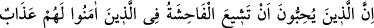
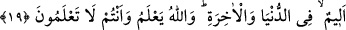

etmesini bilenlere yönelik olduğunu ifâde etmiştir.
Hz. Âişe (r.a.) genel olarak bütün vakitlerinde değil, sadece o sözü söylediği vakitte
şehâdet âleminden alınmış idi. Rabb’inden başkasına şuûru yoktu ve eşyâdan tamamen
gâib idi/geçmişti. Çünkü Mevlâ’nın kendisine olan minnet ve lütfuna duyduğu sevincin
sultânı/gücü kendisini kaplamıştı. Onun için Allah’tan başkasına îtibar etmeksizin ancak
Vâhid ve Kahhâr olanı gördü. İçinde bulunduğu hâle göre bu makam, makamların en
üstünüdür. Bu makam, babamız İbrahim (a.s.)’ın “Rabbimden bir şey istemektense
O’nun hâlimi biliyor olması bana yeter!” dediği zamanki makamıdır.
Nimeti tamamlamak, hürmeti korumak, lâyıkınca âdâbını yerine getirerek Hakk’ın
murâd ettiği hususlarda sebât etmek konusunda niyaz edilip yalvarılacak olan tek varlık
Allah’tır. O bize yeter; O ne güzel vekildir.
et-Te’vîlâtü’n-Necmiyye’de der ki: Allah’a giden iki yol vardır. Birisi selâmet ehlinin
yolu, diğeri melâmet ehlinin yoludur. Selâmet ehlinin yolu cennete ve derecelerine varır.
Çünkü onlar varlıklarının zindanında mahpus kalmışlardır. Melâmet ehlinin yolu ise
Allah’a ulaşır. Çünkü melâmet, varlık hapishânesinin kapısının anahtarıdır. Varlık
onunla kar güneşte eridiği gibi erir. Varlık eridiği ölçüde Allah Teâlâ’ya vuslat
gerçekleşir.
Allah Teâlâ Hz. Âişe’yi selâmetle varlık hapsinden çıkarmak için ona melâmet
kerâmetini ikram etmiştir. Bu, Hz. Âişe’nin velâyetine/Hakk’ın dostluğuna erdiğine
delâlet eder. Çünkü Allah bir kulunu velî/dost edinince onu, yaratılmış olan varlığın
karanlıklarından kıdem nûruna (başlangıcı olmayan nûra) ulaştırır. Nitekim Allah Teâlâ:
“Allah îman edenlerin dostudur, onları karanlıklardan aydınlığa çıkarır.” (el-
Bakara, 2/257) buyurmuştur.”
Hâfız der ki:
Vefâ gösterelim, halkın kınamasını hoş görelim, hoş olalım
Çünkü yolumuzda incinmek kâfirliktir
Mollâ Câmî (k.s.) da der ki:
Aşk, senin derdin için her gönülde bir ev yapınca
Onun temeli, ilk önce melâmet taşından düşer
19. Îmân edenler arasında çirkin şeylerin yayılmasını arzulayan kimseler için
dünyada da âhirette de çetin bir cezâ vardır. Allah bilir, siz bilmezsiniz.